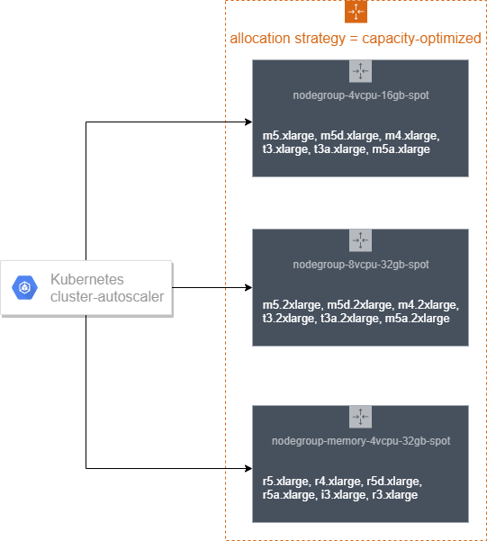
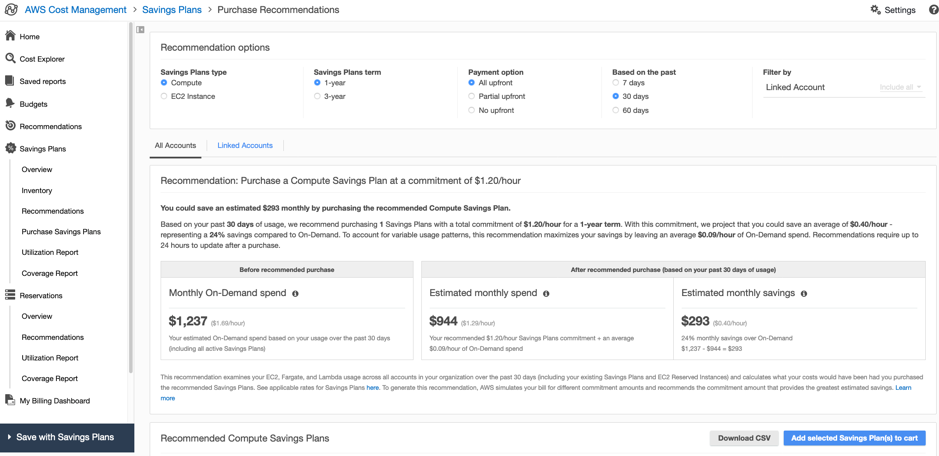

成本效益资源¶
成本效益资源意味着使用适当的服务、资源和配置来运行Kubernetes集群上的工作负载,从而实现成本节省。
建议¶
确保部署容器化服务的基础设施与应用程序配置文件和扩展需求相匹配¶
Amazon EKS支持几种类型的Kubernetes自动扩展 - Cluster Autoscaler、Horizontal Pod Autoscaler和Vertical Pod Autoscaler。本节介绍其中两个,即Cluster Auto Scaler和Horizontal Pod Autoscaler。
使用Cluster Autoscaler调整Kubernetes集群的大小以满足当前需求¶
Kubernetes Cluster Autoscaler会自动调整EKS集群中节点的数量,当由于资源不足而无法启动pod或集群中的节点利用率低且其pod可以重新调度到集群中的其他节点时。Cluster Autoscaler在任何指定的Auto Scaling组内扩展工作节点,并作为部署运行在您的EKS集群中。
Amazon EKS与EC2托管节点组自动化了节点(Amazon EC2实例)的配置和生命周期管理。所有托管节点都作为Amazon EC2 Auto Scaling组的一部分进行配置,由Amazon EKS进行管理,所有资源包括Amazon EC2实例和Auto Scaling组都在您的AWS帐户中运行。Amazon EKS为托管节点组资源打标签,以便Kubernetes Cluster Autoscaler进行发现。
https://docs.aws.amazon.com/eks/latest/userguide/cluster-autoscaler.html 上的文档提供了设置托管节点组并部署Kubernetes Cluster Auto Scaler的详细指南。如果您正在跨多个可用区运行有状态应用程序,并使用Amazon EBS卷作为后端,并使用Kubernetes Cluster Autoscaler,您应该配置多个节点组,每个节点组的范围都限定在单个可用区内。
基于EC2的工作节点的Cluster Autoscaler日志-

当由于资源不足而无法调度pod时,Cluster Autoscaler会确定集群必须扩展,并增加节点组的大小。当使用多个节点组时,Cluster Autoscaler会根据Expander配置选择一个节点组。目前,EKS中支持以下策略: + random - 默认扩展器,随机选择实例组 + most-pods - 选择调度最多pod的实例组。 + least-waste - 选择扩容后将产生最少闲置CPU(如果并列,则为未使用内存)的节点组。当您有不同类型的节点,例如高CPU或高内存节点时,这很有用,您只想在需要大量这些资源的挂起pod时扩展这些节点。 + priority - 选择用户分配的最高优先级的节点组
如果使用EC2 Spot实例作为工作节点,您可以在Cluster Autoscaler中使用random放置策略作为Expander。这是默认的扩展器,在集群必须扩展时任意选择一个节点组。随机扩展器最大限度地利用了多个Spot容量池。
Priority基于扩展器,根据用户分配给扩展组的优先级选择扩展选项。示例优先级可以是让Autoscaler首先尝试扩展Spot实例节点组,然后如果无法,则退回到扩展按需节点组。
most-pods基于扩展器在您使用nodeSelector确保某些pod落在某些节点上时很有用。
从文档中指定least-waste作为Cluster Autoscaling配置的扩展器类型:
spec:
containers:
- command:
- ./cluster-autoscaler
- --v=4
- --stderrthreshold=info
- --cloud-provider=aws
- --skip-nodes-with-local-storage=false
- --expander=least-waste
- --node-group-auto-discovery=asg:tag=k8s.io/cluster-autoscaler/enabled,k8s.io/cluster-autoscaler/<YOUR CLUSTER NAME>
- --balance-similar-node-groups
- --skip-nodes-with-system-pods=false
部署Horizontal Pod Autoscaling以自动扩展部署、复制控制器或副本集中的pod数量¶
Kubernetes Horizontal Pod Autoscaler会根据资源指标(如CPU利用率)或自定义指标支持,根据某些其他应用程序提供的指标自动扩展部署、复制控制器或副本集中的pod数量。这可以帮助您的应用程序在需求增加时进行扩展,或在不需要资源时进行缩减,从而释放您的工作节点供其他应用程序使用。当您设置目标指标利用率百分比时,Horizontal Pod Autoscaler会尝试扩展或缩减您的应用程序以满足该目标。
k8s-cloudwatch-adapter是Kubernetes自定义指标API和外部指标API的一种实现,集成了CloudWatch指标。它允许您使用Horizontal Pod Autoscaler(HPA)和CloudWatch指标来扩展您的Kubernetes部署。
对于使用CPU等资源指标进行扩展的示例,请按照https://eksworkshop.com/beginner/080_scaling/test_hpa/部署示例应用程序,执行简单的负载测试以测试pod自动扩展,并模拟pod自动扩展。
请参阅博客了解使用Amazon SQS(Simple Queue Service)队列中消息数量作为自定义指标来扩展应用程序的示例。
来自博客的Amazon SQS外部指标示例:
apiVersion: metrics.aws/v1alpha1
kind: ExternalMetric:
metadata:
name: hello-queue-length
spec:
name: hello-queue-length
resource:
resource: "deployment"
queries:
- id: sqs_helloworld
metricStat:
metric:
namespace: "AWS/SQS"
metricName: "ApproximateNumberOfMessagesVisible"
dimensions:
- name: QueueName
value: "helloworld"
period: 300
stat: Average
unit: Count
returnData: true
利用此外部指标的HPA示例:
kind: HorizontalPodAutoscaler
apiVersion: autoscaling/v2beta1
metadata:
name: sqs-consumer-scaler
spec:
scaleTargetRef:
apiVersion: apps/v1beta1
kind: Deployment
name: sqs-consumer
minReplicas: 1
maxReplicas: 10
metrics:
- type: External
external:
metricName: hello-queue-length
targetAverageValue: 30
Cluster Auto Scaler用于Kubernetes工作节点,Horizontal Pod Autoscaler用于pod,两者的结合将确保配置的资源尽可能接近实际利用率。
 (图片来源: https://aws.amazon.com/blogs/containers/cost-optimization-for-kubernetes-on-aws/)
(图片来源: https://aws.amazon.com/blogs/containers/cost-optimization-for-kubernetes-on-aws/)
Amazon EKS with Fargate
*Horizontal Pod Autoscaling of Pods*
使用以下机制可以对EKS on Fargate进行自动扩展:
- 使用Kubernetes指标服务器,并根据CPU和/或内存使用情况配置自动扩展。
- 使用Prometheus和Prometheus指标适配器,根据自定义指标(如HTTP流量)配置自动扩展
- 根据App Mesh流量配置自动扩展
上述场景在"使用自定义指标对EKS on Fargate进行自动扩展"的实践性博客中有解释
*Vertical Pod Autoscaling*
对于在Fargate上运行的pod,使用Vertical Pod Autoscaler来优化应用程序使用的CPU和内存。但是,由于更改pod的资源分配需要重新启动pod,因此必须将pod更新策略设置为Auto或Recreate,以确保正确的功能。
建议¶
使用Down Scaling在非工作时间缩小Kubernetes部署、StatefulSets和/或HorizontalPodAutoscalers。¶
作为控制成本的一部分,在不使用的情况下缩小资源也会对整体成本产生巨大影响。有工具like kube-downscaler和Kubernetes Descheduler可以用于此目的。
Kube-descaler可用于在下班时间或设定的时间段内缩小Kubernetes部署。
Kubernetes Descheduler根据其策略可以找到可以移动的pod并驱逐它们。在当前的实现中,Kubernetes Descheduler不会重新调度被驱逐的pod,而是依赖默认调度程序来完成此操作。
Kube-descaler
安装kube-downscaler:
示例配置使用--dry-run作为安全标志来防止缩小 - 删除它以启用downscaler,例如通过编辑部署:
部署一个nginx pod,并将其计划在时区 - 周一至周五 09:00-17:00 Asia/Kolkata运行:
$ kubectl run nginx1 --image=nginx
$ kubectl annotate deploy nginx1 'downscaler/uptime=Mon-Fri 09:00-17:00 Asia/Kolkata'
Note
新的nginx部署适用默认宽限期15分钟,即如果当前时间不在周一至周五9-17点(亚洲/加尔各答时区),它不会立即缩小,而是在15分钟后缩小。

更多高级缩小部署场景可在kube-down-scaler github项目中找到。
Kubernetes descheduler
Descheduler可以作为Job或CronJob在k8s集群内部运行。Descheduler的策略是可配置的,包括可以启用或禁用的策略。目前实现了七种策略RemoveDuplicates、LowNodeUtilization、RemovePodsViolatingInterPodAntiAffinity、RemovePodsViolatingNodeAffinity、RemovePodsViolatingNodeTaints、RemovePodsHavingTooManyRestarts和PodLifeTime。更多详细信息可以在文档中找到。
一个示例策略,它对节点的低CPU利用率(涵盖了欠利用和过度利用的场景)、删除重启次数过多的pod等进行了descheduler启用:
apiVersion: "descheduler/v1alpha1"
kind: "DeschedulerPolicy"
strategies:
"RemoveDuplicates":
enabled: true
"RemovePodsViolatingInterPodAntiAffinity":
enabled: true
"LowNodeUtilization":
enabled: true
params:
nodeResourceUtilizationThresholds:
thresholds:
"cpu" : 20
"memory": 20
"pods": 20
targetThresholds:
"cpu" : 50
"memory": 50
"pods": 50
"RemovePodsHavingTooManyRestarts":
enabled: true
params:
podsHavingTooManyRestarts:
podRestartThresholds: 100
includingInitContainers: true
Cluster Turndown
Cluster Turndown是一种基于自定义计划和关闭标准自动缩小和扩大Kubernetes集群支持节点的功能。此功能可用于在非工作时间降低支出和/或减少安全面积。最常见的用例是在非工作时间将非生产环境(例如开发集群)缩小到零。Cluster Turndown目前处于ALPHA版本。
Cluster Turndown使用Kubernetes自定义资源定义来创建计划。以下计划将创建一个计划,该计划从指定的开始日期时间开始关闭,并在指定的结束日期时间重新启动(时间应以RFC3339格式为基准,即基于UTC偏移量的时间)。
apiVersion: kubecost.k8s.io/v1alpha1
kind: TurndownSchedule
metadata:
name: example-schedule
finalizers:
- "finalizer.kubecost.k8s.io"
spec:
start: 2020-03-12T00:00:00Z
end: 2020-03-12T12:00:00Z
repeat: daily
使用LimitRanges和Resource Quotas来通过限制在命名空间级别分配的资源量来帮助管理成本¶
默认情况下,容器在Kubernetes集群上以无限的计算资源运行。使用资源配额,集群管理员可以限制在命名空间级别的资源消耗和创建。在命名空间内,Pod或Container可以使用命名空间的资源配额定义的CPU和内存。有一个担心是,一个Pod或Container可能会垄断所有可用的资源。
Kubernetes使用资源配额和限制范围来控制CPU、内存、PersistentVolumeClaims等资源的分配。ResourceQuota是在命名空间级别,而LimitRange则适用于容器级别。
Limit Ranges
LimitRange是一个策略,用于限制命名空间中的资源分配(到Pod或Container)。
以下是使用Limit Range设置默认内存请求和默认内存限制的示例。
apiVersion: v1
kind: LimitRange
metadata:
name: mem-limit-range
spec:
limits:
- default:
memory: 512Mi
defaultRequest:
memory: 256Mi
type: Container
更多示例可在Kubernetes文档中找到。
Resource Quotas
当多个用户或团队共享一个具有固定节点数的集群时,有一个担心是一个团队可能会使用超过其公平份额的资源。资源配额是管理员解决这一问题的一个工具。
以下是如何设置可由命名空间中运行的所有容器使用的内存和CPU总量的配额示例,方法是在ResourceQuota对象中指定配额。这指定容器必须有内存请求、内存限制、CPU请求和CPU限制,并且不应超过ResourceQuota中设置的阈值。
apiVersion: v1
kind: ResourceQuota
metadata:
name: mem-cpu-demo
spec:
hard:
requests.cpu: "1"
requests.memory: 1Gi
limits.cpu: "2"
limits.memory: 2Gi
更多示例可在Kubernetes文档中找到。
使用定价模型实现有效利用¶
Amazon EKS的定价详情在定价页面上给出。Amazon EKS on Fargate和EC2都有共同的控制平面成本。
如果您使用AWS Fargate,定价是根据从下载容器镜像开始到Amazon EKS pod终止的vCPU和内存资源使用情况计算的,并四舍五入到最接近的秒数。最小收费为1分钟。请参阅AWS Fargate定价页面上的详细定价信息。
Amazon EKS on EC2:
Amazon EC2提供了一系列实例类型来满足不同的使用场景。实例类型包含不同组合的CPU、内存、存储和网络容量,让您可以灵活地选择适合您应用程序的资源组合。每种实例类型都包括一个或多个实例大小,允许您根据目标工作负载的要求扩展资源。
除了CPU数量、内存、处理器系列类型之外,另一个关键决策参数是弹性网络接口(ENI)的数量,这反过来会影响您可以在该EC2实例上运行的pod的最大数量。每种EC2实例类型的最大pod数列表保存在github上。
*按需EC2实例:*
使用按需实例,您可以根据运行的实例按小时或秒支付计算容量费用。不需要长期承诺或预付款。
Amazon EC2 A1实例提供了显著的成本节省,非常适合受Arm生态系统广泛支持的扩展和基于Arm的工作负载。您现在可以使用Amazon Elastic Container Service for Kubernetes (EKS)在Amazon EC2 A1实例上运行容器,作为公开开发者预览的一部分。Amazon ECR现在支持多架构容器镜像,这使得从同一镜像存储库部署不同架构和操作系统的容器镜像变得更加简单。
您可以使用AWS Simple Monthly Calculator或新的定价计算器获取EKS工作节点的按需EC2实例的定价。
使用Spot EC2实例:¶
Amazon EC2 Spot实例允许您以低于按需价格最高90%的价格请求Amazon EC2备用计算容量。
Spot实例通常非常适合无状态的容器化工作负载,因为容器和Spot实例的方法是相似的;临时和自动缩放的容量。这意味着它们都可以在不影响应用程序性能或可用性的情况下添加和删除。
您可以创建多个节点组,混合使用按需实例类型和EC2 Spot实例,以利用这两种实例类型之间的定价优势。
 (图片来源: https://ec2spotworkshops.com/using_ec2_spot_instances_with_eks/spotworkers/workers_eksctl.html)
下面是一个使用eksctl创建节点组的Spot实例的示例yaml文件。在创建节点组时,我们配置了一个节点标签,以便Kubernetes知道我们配置了什么类型的节点。我们将节点的生命周期设置为Ec2Spot。我们还使用PreferNoSchedule进行污点,以更喜欢不容忍污点的pod不被调度到Spot实例上。这是NoSchedule的"首选"或"软"版本,即系统将尽量避免将不容忍污点的pod调度到该节点上,但不是必需的。我们使用这种技术来确保只有合适的工作负载被调度到Spot实例上。
apiVersion: eksctl.io/v1alpha5
kind: ClusterConfig
metadata:
name: my-cluster-testscaling
region: us-west-2
nodeGroups:
- name: ng-spot
labels:
lifecycle: Ec2Spot
taints:
spotInstance: true:PreferNoSchedule
minSize: 2
maxSize: 5
instancesDistribution: # 应至少指定两种实例类型
instanceTypes:
- m4.large
- c4.large
- c5.large
onDemandBaseCapacity: 0
onDemandPercentageAboveBaseCapacity: 0 # 所有实例都将是Spot实例
spotInstancePools: 2
我们还应该在每个Spot实例上部署AWS Node Termination Handler。这将监视实例上的EC2元数据服务是否有中断通知。终止处理程序包括ServiceAccount、ClusterRole、ClusterRoleBinding和DaemonSet。AWS Node Termination Handler不仅适用于Spot实例,它还可以捕获一般的EC2维护事件,因此可以在集群的所有工作节点上使用。
如果客户多样化且使用容量优化分配策略,Spot实例将可用。您可以在清单文件中使用节点亲和性来配置这一点,以更喜欢Spot实例,但不要求它们。这将允许pod在没有可用或正确标记的Spot实例的情况下被调度到按需节点上。
affinity:
nodeAffinity:
preferredDuringSchedulingIgnoredDuringExecution:
- weight: 1
preference:
matchExpressions:
- key: lifecycle
operator: In
values:
- Ec2Spot
tolerations:
- key: "spotInstance"
operator: "Equal"
value: "true"
effect: "PreferNoSchedule"
您可以在在线EC2 Spot研讨会上完成使用EC2 Spot实例的完整研讨会。
使用计算节省计划¶
计算节省计划是一种灵活的折扣模型,它提供与预留实例相同的折扣,但需要在一年或三年期内承诺使用特定金额(以美元/小时为单位)的计算能力。详细信息见节省计划启动FAQ。这些计划会自动应用于任何EC2工作节点,无论区域、实例系列、操作系统还是租用,包括EKS集群中的节点。例如,您可以从C4迁移到C5实例,将工作负载从都柏林迁移到伦敦,同时受益于节省计划价格,而无需做任何事情。
AWS Cost Explorer将帮助您选择一个节省计划,并指导您完成购买过程。 
注意 - 计算节省计划现在也适用于AWS Elastic Kubernetes Service (EKS)的AWS Fargate。
注意 - 上述定价不包括数据传输费用、CloudWatch、Elastic Load Balancer和Kubernetes应用程序可能使用的其他AWS服务。
资源¶
请参考以下资源,了解有关成本优化最佳实践的更多信息。
视频¶
文档和博客¶
- Kubernetes在AWS上的成本优化
- 使用Spot实例为EKS构建成本优化和弹性
- 使用自定义指标对EKS on Fargate进行自动扩展
- AWS Fargate注意事项
- 将Spot实例与EKS一起使用
- 扩展EKS API:托管节点组
- 使用Amazon EKS进行自动扩展
- Amazon EKS定价
- AWS Fargate定价
- 节省计划
- 使用Kubernetes在AWS上节省云成本